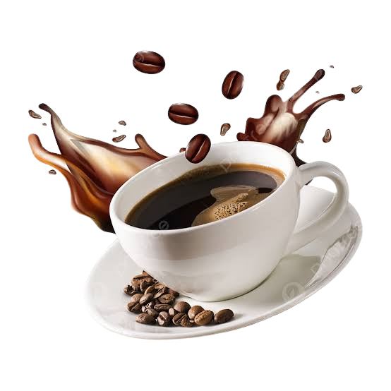

Bienvenue chez Nour's Café
Découvrez notre sélection de cafés artisanaux d'exception.
Passionnés par l'art du café, Nour's Café vous propose une sélection rigoureuse des meilleurs grains du monde. De la torréfaction artisanale à la tasse, nous nous engageons à offrir une expérience gustative d'exception au quotidien.
Découvrir nos cafés